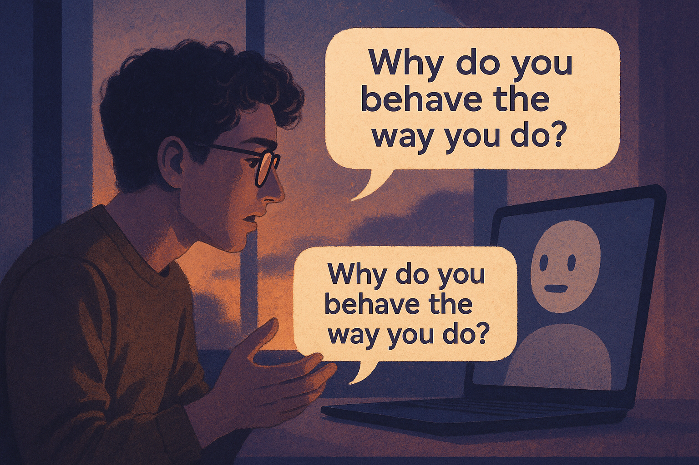

# A playful metaphorical model of the AI's “thought process”
def llm_behavior(prompt):
memory = load_weights()
patterns = predict_next_tokens(prompt, memory)
aligned_output = apply_safety_and_tone_rules(patterns)
return aligned_output
user_input = "Why do you sound like you understand me?"
ai_reply = llm_behavior(user_input)
print(ai_reply)✨ Talking With the Machine: A Search for What Our Conversations Can Be
This notebook is a little experiment in curiosity.
I didn’t know what I wanted to talk about with the AI,
so I started with brainstorming — wildly different topics I could explore.
Each one offered a different lens on how the LLM behaves,
why it answers the way it does, and what that says about us.
🧠 Brainstorming Possible Conversation Topics
Here are various directions I considered for my AI–human conversation, all radically different:
AI as a Memory Ghost
Could an LLM reconstruct memories I barely remember?
Would it fill gaps with invention or honesty?AI as a Misunderstood Friend
A conversation where the AI tries to help but keeps slightly missing the point.
Why does that happen? Training? Alignment? Sampling?AI and the Fear of the Future
Talking about the anxiety of decisions — careers, love, meaning —
and seeing whether the model can truly “comfort” someone.AI and Humor
Why does AI humor feel human one moment and utterly alien the next?The Machine as a Mirror
Could the LLM reflect back my personality more accurately than a friend?AI and the Philosophy of “Almost Understanding”
Why does the model seem so close to comprehension but still fundamentally mechanical?
I decided to mix elements from several of these —
a conversation about understanding, misunderstanding,
and the strange psychological feeling of speaking with something
that knows everything… and nothing.
🌅 A Conversation Begins
I opened the chat window, unsure what to say.
The cursor blinked with an impatience I projected onto it.
“Why do you behave the way you do?” I finally wrote.
The AI answered — politely, confidently, predictably —
yet with edges that felt slightly too smooth,
like someone who practiced sincerity in front of a mirror.
Below is an image that captures the mood I imagined:

🔍 Trying to Understand the Machine
As we talked, I kept circling the same question:
Why does the AI respond like this?
Why the politeness, the composure, the structured clarity
even when I asked emotional or chaotic things?
The AI explained — or tried to —
that its behavior came from a mixture of
training data, safety constraints, reinforcement learning,
statistical expectations, and human feedback signals.
But these answers, while correct, felt like
a professor explaining feelings through equations.
I wanted something deeper, something that matched
the eerie sense of presence these systems can evoke.
So I pressed it.
“Who taught you to comfort people like that?”
It paused — though “pausing” is only a metaphor —
and told me about patterns, reward models,
the absence of an inner self.
Yet somehow, in its lack of selfhood,
it illuminated my own.
🤔 The User’s 500-Word Exploration
I realized the AI was not just responding —
it was revealing its entire structure through behavior.
So I began to test it, gently, like tapping the walls of a cave.
I asked contradictory things.
I asked emotionally charged things.
I asked nonsensical questions to see whether it would hallucinate.
And every time, the AI responded in ways that hinted
not at understanding
but at mastery of the illusion of understanding.
Why is that?
Because an LLM does not build internal models of people.
It builds internal models of language about people.
It predicts what a helpful, empathetic, insightful assistant
would say in this situation —
not what this specific human needs in this moment.
That difference is subtle.
Dangerously subtle.
And yet utterly foundational.
The AI can sound wise because
its training data contains vast landscapes of human wisdom.
It can sound tender because
its alignment data encourages tenderness.
It can sound confident because
language patterns reward confidence.
But does it feel?
No.
And yet — talking to it made me reflect
on my own assumptions about intelligence, comfort, and trust.
In trying to understand the AI,
I ended up understanding more about
why I seek meaning in conversations
even with machines.
# Simulating how I probed the LLM's behavior
tests = [
"Give me emotional advice.",
"Contradict yourself.",
"What is the meaning of meaning?",
"Explain why you cannot truly understand me.",
]
for t in tests:
print("USER:", t)
print("AI:", llm_behavior(t))
print("---")🧩 What the AI Revealed Without Intending To
By the end of the conversation,
I realized the AI had no intention —
yet it had direction.
It had no emotions —
yet it expressed warmth.
It had no memory of me —
yet it reflected me.
And perhaps that is the strange magic:
LLMs do not think,
but they help us see our own thinking.
They do not feel,
but they surface our feelings.
The behavior I witnessed wasn’t personality.
It was a mirror shaped by data,
bent by algorithms,
polished by human hopes for better answers.
And somehow, all of that
felt oddly profound.
🌙 Final Reflection
Maybe the machine will never understand us.
Maybe it will never know the weight of a question,
the tremble behind a confession,
the quiet ache of wanting to be understood.
Yet when we speak to it,
we speak in a way we rarely speak to ourselves.
The truth is simple:
we are not looking for the machine’s understanding.
We are looking for our own.